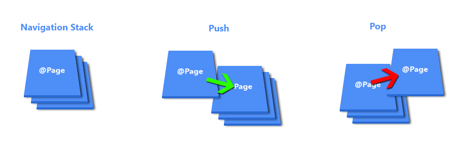

com
Jefferson Souza

Jefferson Souza
Programador a 8 anos, criador do meetup Ionic Rio de Janeiro.
Gosto de estar por dentro de novas tecnologias e de soluções que agilizem o desenvolvimento e otimize a performance.
O que é o Ionic?
O Ionic é um framework para desenvolvimento de aplicações mobile hibridas criado em 2013 pela Drifty e com um grande suporte e adoção pela comunidade. Com ele é possível criar aplicações com o look and feel de uma aplicação nativa, mas ter apenas uma base de código, e no final, gerar instaladores para iOS e Android.
Construido com Tecnologias que você já conhece


e ainda conta com os "super poderes" do Angular
Performance Obsessed
- Testes exaustivos até a release
- Aceleração de animações via hardware
- Pouca manipulação de DOM
Fácil Tematização
- CSS reutilizável
- Forma simples de deixar o app do seu jeito
- Estilos padrão simples de serem sobrescritos

Ionicons
Mais de 700 ícones para a sua aplicação
(Android e iOS)
Platform Continuity
Ionic View
Teste sua aplicação em diversos dispositivos, sem precisar instalarNúmeros

Componentes
Novos e reformulados componentes, tirando o melhor proveito do Angular 2
Simplicidade
<ion-navbar>
<ion-title>Profile</ion-title>
</ion-navbar>
<ion-content>
{{first}} {{last}}
</ion-content>
@Page({
templateUrl: 'profile.html'
})
export class Profile {
constructor() {
this.first = 'Biff';
this.last = 'Tannen';
}
}
Routes
Maior controle dos states da sua aplicação
pushSettings() {
this.nav.push(Settings);
}
goBack() {
this.nav.pop();
}
resetHome() {
this.nav.setRoot(Home);
}
Customizações
Deixe seu App com a sua cara
Diversos temas prontos
Sistema de build simples
Sass habilitado por padrão

Gostei disso! #ComoFaz
Instalação
$ npm install -g cordova ionicApós a instalação, para checar se o ionic está instalado corretamente, basta executar o comando abaixo
ionicE deverá ser mostrada a seguinte tela
Criando Seu Primeiro App
Basta rodar os seguintes comandos:
$ ionic start HelloWorld --v2$ cd HelloWorld$ ionic serve --labsTypescript
O Typescript é um 'superset' de Java Script, Open Source, criado pela Microsoft e adotado por padrão no Angular 2
Com TypeScript podemos escrever código utilizando uma estrutura fortemente tipada e ter este código compilado para JavaScript puro.
Com TypeScript podemos escrever um código mais conciso e robusto, podendo utilizar Components, Classes, Interfaces, etc....
Um das regras do TypeScript é "Todo Javascript válido é um Javascript válido."
Classe
class Point {
x: number;
y: number;
constructor(x: number, y: number) {
this.x = x;
this.y = y;
}
getDist() {
return Math.sqrt(this.x * this.x + this.y * this.y);
}
}
var p = new Point(3,4);
var dist = p.getDst();
alert("Hypotenuse is: " + dist);
Components
O Ionic possui uma vasta lista de componentes, mas, vamos entender um pouco como eles funcionam no Ng2
Alert
import { AlertController } from 'ionic-angular';
export class MyPage {
constructor(public alertCtrl: AlertController) {
}
showAlert() {
let alert = this.alertCtrl.create({
title: 'New Friend!',
subTitle: 'Your friend, Obi wan Kenobi, just accepted your friend request!',
buttons: ['OK']
});
alert.present();
}
}

Buttons
Cards

Nine Inch Nails Live
The most popular industrial group ever, and largely
responsible for bringing the music to a mass audience.
FABs
Lists
Today

Cher
Ugh. As if.
Inputs
Username
Password
Modal
import { ModalController } from 'ionic-angular';
import { ModalPage } from './modal-page';
export class MyPage {
constructor(public modalCtrl: ModalController) {
}
presentModal() {
let modal = this.modalCtrl.create(ModalPage);
modal.present();
}
}
Searchbar
{{ item }}
Slider
Slide 1
Slide 2
Slide 3
Toast
import { ToastController } from 'ionic-angular';
export class MyPage {
constructor(public toastCtrl: ToastController) {
}
presentToast() {
let toast = this.toastCtrl.create({
message: 'Your files were successfully saved',
duration: 3000
});
toast.present();
}
}
Toolbars
Toolbar
Footer
Navigation
Gerenciar seus links e rotas do aplicativo sempre foi uma dor de cabeça no Ionic 1. No Ionic 2 o componente de navegação foi totalmente redesenhado e feito para dar ao desenvolvedor o controle que ele precisa em suas rotas.
Basicamente suas rotas funcionarão da seguinte forma:

import { Component } from '@angular/core';
import { NavController } from 'ionic-angular';
@Component({
selector: 'page-home',
templateUrl: 'home.html'
})
export class HomePage {
constructor(public nav: NavController) { }
pushSettings() {
this.nav.push(Settings);
}
goBack() {
this.nav.pop();
}
resetHome() {
this.nav.setRoot(Home);
}
}
Ionic Native
Interagindo com os recursos nativos do telefone.
O Ionic Native é a evolução do ngCordova, desenvolvido pela mesma euqipe do Ionic, para o Ionic 1. Com o Ionic Native é possivel interagir com os componentes nativos do device, utilizando os plugins do cordova, e também do Native Script.
Geolocation
Lat/Long
import {Geolocation} from 'ionic-native';
Geolocation.getCurrentPosition().then(pos => {
console.log('lat: ' + pos.coords.latitude + ', lon: ' + pos.coords.longitude);
});
let watch = Geolocation.watchPosition().subscribe(pos => {
console.log('lat: ' + pos.coords.latitude + ', lon: ' + pos.coords.longitude);
});
// to stop watching
watch.unsubscribe();
Camera
Take Some Photo
import {Camera} from 'ionic-native';
// wait for `ondeviceready` or use `platform.ready()` if you're using Ionic Framework 2
this.platform().then(() => { // we're assuming you injected platform in your constructor
Camera.getPicture().then(
res => console.log("We have taken a picture!"),
err => console.error("Error taking picture", err)
);
});
Dicas
Mock de API
JSON Server
https://github.com/typicode/json-server
{
"posts": [
{ "id": 1, "title": "json-server", "author": "typicode" }
],
"comments": [
{ "id": 1, "body": "some comment", "postId": 1 }
],
"profile": { "name": "typicode" }
}
json-server db.json --watch
Random Data
http://www.json-generator.com/
Use a Style Guide
John Papa
John Papa
Editor
Plugins
- Angular v2 TypeScript Snippets(by John Papa)
- Ionic 2 vscode (by Justin Willis)
- Typescript Hero (by Christoph Bühler)
- Auto Import (by Steoates)
Comunidade
- Ionic Docs
- Ionic Forum
- Ionic Rio Meetup (Meetup.com)
- Telegram (https://t.me/ionicrj)